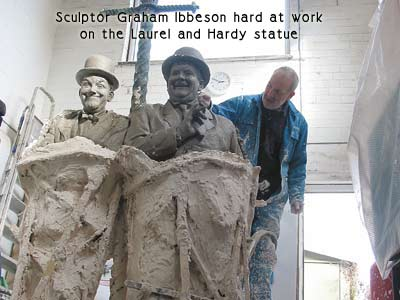
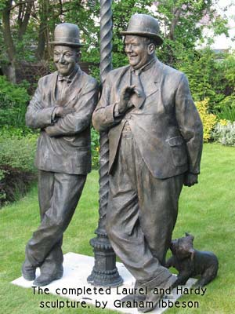

This following article is reproduced with kind permission by the author, Jeremy Craddock, which appeared in the Westmorland Gazette in 2005.
Ulverston-born film legend Stan Laurel died 40 years ago. As his birthplace gets ready to unveil a statue in his honour, Jeremy Craddock looks at the enduring popularity of Laurel and Hardy.
Forty years ago an elderly man turned to his nurse and said: “I wish I was skiing right now”.
“Oh, I didn’t know you were a skier,” replied the nurse.
“I’m not. But I’d much rather be doing that than this.”
It was the last punch line Stan Laurel delivered. He died of a heart attack, aged 74, on February 23, 1965.
Ulverston-born Laurel, and his screen partner Oliver Hardy, may be gone, but seven decades after their heyday, the world is still laughing.
The only difference now is we watch them on television and DVD – a boxed-set of their work was released recently – instead of in the cinema. Over Christmas they were seventh in Channel Four’s 100 best comedians’ comedians poll.
Modern-day performers cite them as major influences. Ricky Gervais and Martin Freeman of The Office are big fans.
Meanwhile, their fan club, The Sons of the Desert, is close to collecting £56,000 to pay for a stunning statue of the comedy duo in Ulverston.

The huge artwork has been fashioned by acclaimed sculptor Graham Ibbeson. He’s responsible for the Eric Morecambe statue, which has done wonders for the tourist industry in Eric’s seaside birthplace of Morecambe. So, why does Laurel and Hardy’s star continue to soar when many of their contemporaries’ have long-since burned out?
“It’s clean humour. It appeals to both children and adults,” says Stan Laurel’s cousin, Nancy Wardell, one of the English-born star’s relatives in the UK.
“If people watch them they realise how good their timing was. I hadn’t realised it myself until I watched them properly.”
Nancy, of Dewsbury, who is now 79, met Laurel when he and Hardy toured British music halls in the 40s and 50s. She still has regular trans-Atlantic telephone conversations with Laurel’s daughter, Lois, who is 77.
“People always ask what he was like. He was just a relative to us. He didn’t talk much about his work. He talked about the family and his childhood,” says Nancy.
Marion Grave is a Laurel and Hardy expert by default. Her late father, Bill Cubin, a first generation fan, founded the Laurel and Hardy Museum in Ulverston in the 1970s.
“It was a real labour of love for dad,” she says. “He kept it going against the odds. We always called it the hobby that got out of control. Before he died he said I should feel under no obligation to keep it going. But he loved Laurel and Hardy and wanted to share his love with people. There was no question I would continue it, and now my sons intend to keep it going.”
The statue fundraising campaign is proof of the appeal of Laurel and Hardy.

Marion says: “Their popularity is still growing, with a new generation coming to them. The modern day comedians still look at them as the first and the best. Stan’s timing was immaculate and he was such a clever comedian. Things he invented, such as the use of the camera, are still in use today, which is quite an achievement when you consider it’s over 50 years since they made their last film.” Sculptor Graham Ibbeson has no doubts about their longevity.
“They were born in the 19th century, made us laugh in the 20th and now we are giving them a fitting memorial in the 21st. They straddle three centuries.
“I don’t know anybody who doesn’t like Laurel and Hardy. They have a great affection for one another and a great humanity and child-like innocence.”
He says modelling the duo was a pleasure. “Each morning I used to unwrap the work and Stan’s smiling face used to greet me. It inspired me.”
While his statue stands in a London foundry awaiting delivery to the yet-to-be chosen town centre spot in Ulverston, he has an idea.
“My ambition is to have an identical sculpture in Harlem, Georgia, where Ollie was born. It would be good to have a trans-Atlantic unveiling linked by satellite,” he says.
The fame of Stan Laurel has proved an unexpected source of companionship for Mabel Radcliffe. She lives at 3 Argyle Street, Ulverston. It was in this house that Stan Laurel was born as Arthur Stanley Jefferson on June 16, 1890.
The house is a mecca for fans. Mrs Radcliffe, 86, keeps a book which visitors can sign, in return for a donation to charity.
Long before she moved in 30 years ago, she saw Laurel and Hardy when they were given a civic reception in Ulverston in 1947.
Now, Mrs Radcliffe corresponds with many fans from around the world with whom she has struck up an acquaintance, including a German father and daughter.
When she put the house on the market a couple of years ago to move nearer her son in Barrow, the story made headlines.
She took the house off the market eventually. She says she would probably have missed meeting people if she’d moved to an anonymous address.
“People say I could make a fortune if I put it up for sale on the Internet. But I’m so used to coming home from town and overhearing people saying ‘Oh, it must be down here somewhere’. I tell them, follow me, I’ll show you exactly where it is – I live there!”
Seventy years since their best work, 50 since their last film, and now four decades since Stan died – Laurel and Hardy really are having the last laugh.
Pictures on this page are credited to Max Ibbeson.